Group: D365 - iFinance - How To's - iFinance (Customer Management)
Modified on: 2023-05-01 @ 22:11:50Z
Purpose: Change a customer's CTC number. For Site Customers, the Site field under Sales Order defaults maps to iCare 2.0 and determines the default Service Territory. Note this will not automatically update the Financial Dimensions on any existing Project or unposted transaction to a different CTC.
Tip:
Prerequisites:
To update a customer's CTC:
1. Open iFinance and login.
2. Navigate to Accounts receivable > Customers > All customers.
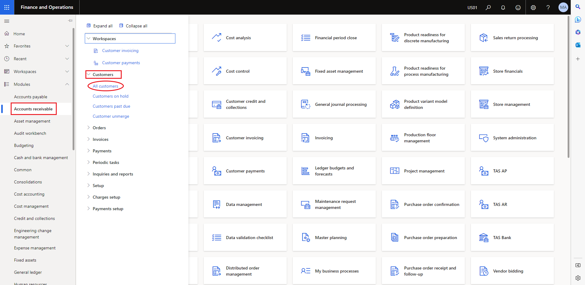
Figure 1 - Navigate to All Customers
3. Locate the customer's General or Site record and click the account link.
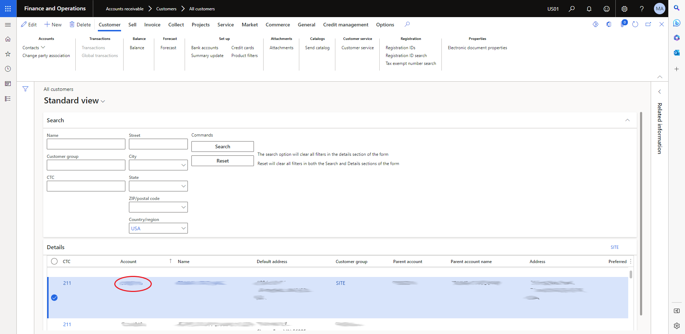
Figure 2 - Click the Account Link
4. Update the Site field in the Sales order defaults section to the new CTC number.
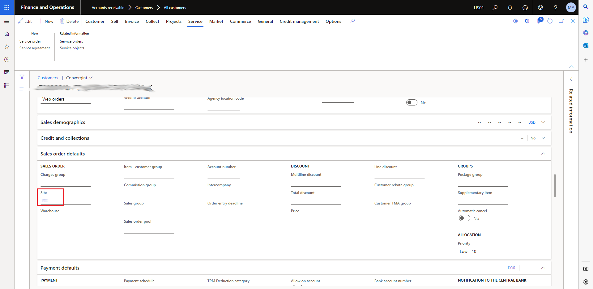
Figure 3 - Update the Site Field to the New CTC Number
5. Update the Department field in the Financial dimensions section to the new CTC number.
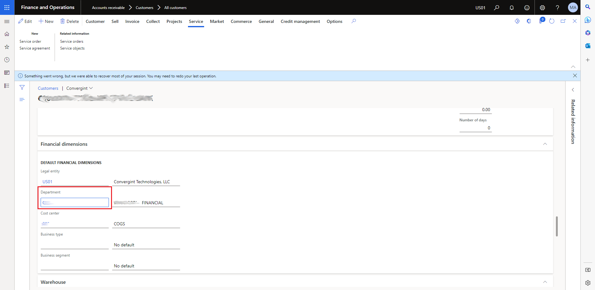
Figure 4 - Update the Department Field to the New CTC Number
6. If this is a customer Site and you need to update the Financial Dimensions on existing Projects/Service Agreements/Service Orders, continue to steps 7 through 14. If this is the General for the customer you have completed updating the customer's CTC.
7. Click the Projects item in the top menu, then select Projects.
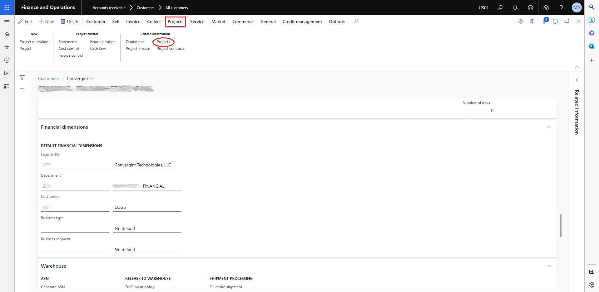
Figure 5 - Select Projects
8. For each project in the result that you need to update the Financial Dimension for a different CTC to get the revenue/costs perform steps 9 through xx
9. Click the Project ID link.
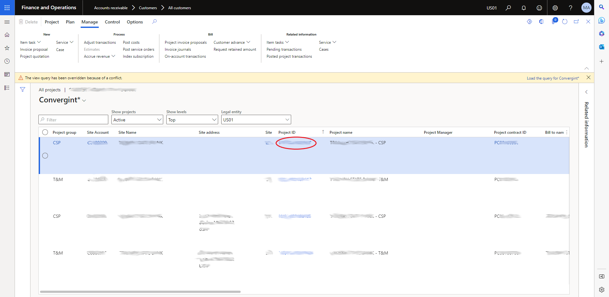
Figure 6 - Click the Project ID LInk
10. Update the Department field in the Financial dimensions section to the new CTC number, then click the Save button.
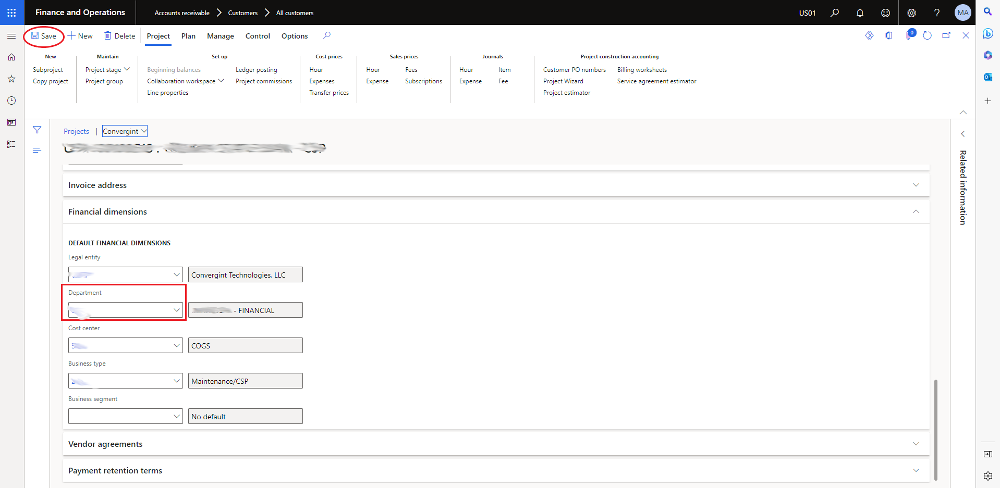
Figure 7 - Update the Department Field to the New CTC Number and Click the Save Button
11. Click the Manage top menu item, click Service from the ribbon, and select Service agreements.
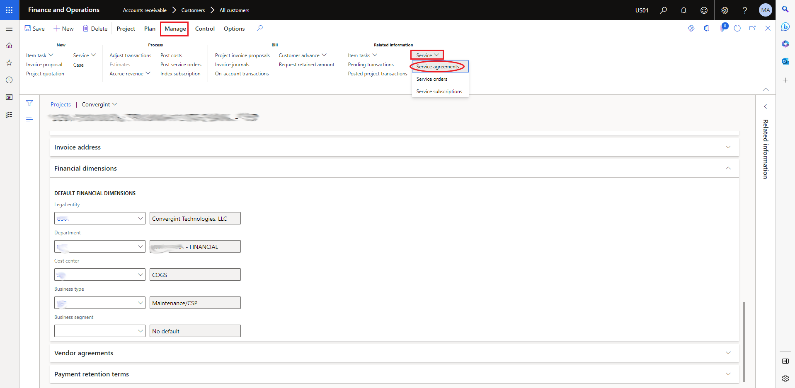
Figure 8 - Select Service Agreements
12. Click the Service agreement link.
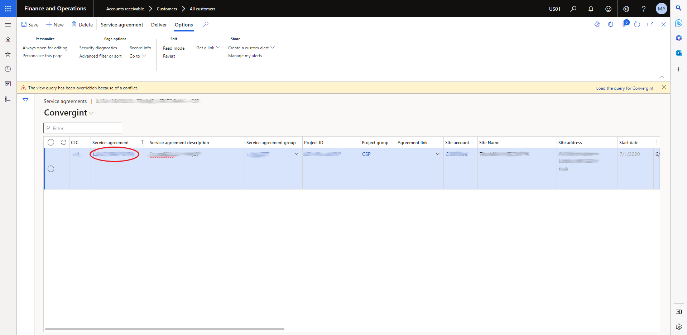
Figure 9 - Click the Service Agreement Link
13. Update the Department field in the Financial dimensions section to the new CTC number, then click the Save button.
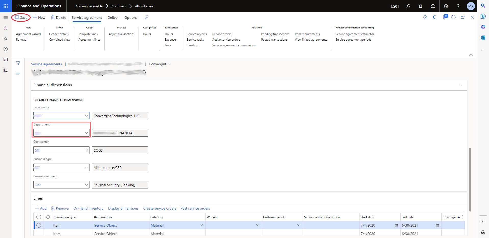
Figure 10 - Update the Department Field to the New CTC Number and Click the Save Button
14. Return to the project screen by clicking the "X" in the upper right corner of the screen.
15. If the project has sub-projects, select the Sub-project(s) and repeat steps 7 through 14.
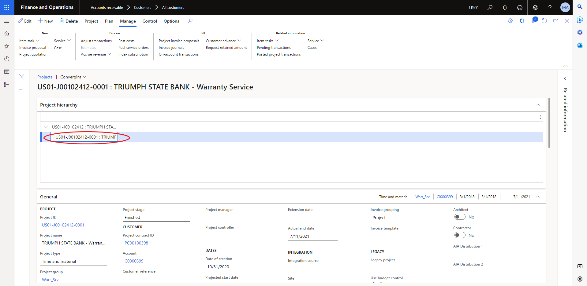
Figure 11 - Select the Warranty Sub-Project and Repeat Steps 7 through 14
Outcome: The customer's CTC has been updated. If work orders that have transactions posted to them exist a new work order will need to be created and have the adjustment process performed to move the costs to the new service order.
Related Topics: